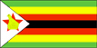
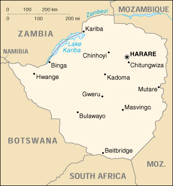

{kind=link}


| Zimbabwe |  |
|
|  | |
| Introduction |
Background: The UK annexed Southern Rhodesia from the South Africa Company in 1923. A 1961 constitution was formulated to keep whites in power. In 1965 the government unilaterally declared its independence, but the UK did not recognize the act and demanded voting rights for the black African majority in the country (then called Rhodesia). UN sanctions and a guerrilla uprising finally led to free elections in 1979 and independence (as Zimbabwe) in 1980. Robert MUGABE, the nation's first prime minister, has been the country's only ruler (as president since 1987) and has dominated the country's political system since independence.
| Geography |
Location: Southern Africa, between South Africa and Zambia
Geographic coordinates: 20 00 S, 30 00 E
Map references: Africa
Area:
total:
390,580 sq km
land:
386,670 sq km
water:
3,910 sq km
Area - comparative: slightly larger than Montana
Land boundaries:
total:
3,066 km
border countries:
Botswana 813 km, Mozambique 1,231 km, South Africa 225 km, Zambia 797 km
Coastline: 0 km (landlocked)
Maritime claims: none (landlocked)
Climate: tropical; moderated by altitude; rainy season (November to March)
Terrain: mostly high plateau with higher central plateau (high veld); mountains in east
Elevation extremes:
lowest point:
junction of the Runde and Save rivers 162 m
highest point:
Inyangani 2,592 m
Natural resources: coal, chromium ore, asbestos, gold, nickel, copper, iron ore, vanadium, lithium, tin, platinum group metals
Land use:
arable land:
7%
permanent crops:
0%
permanent pastures:
13%
forests and woodland:
23%
other:
57% (1993 est.)
Irrigated land: 1,930 sq km (1993 est.)
Natural hazards: recurring droughts; floods and severe storms are rare
Environment - current issues: deforestation; soil erosion; land degradation; air and water pollution; the black rhinoceros herd - once the largest concentration of the species in the world - has been significantly reduced by poaching
Environment - international agreements:
party to:
Biodiversity, Climate Change, Desertification, Endangered Species, Law of the Sea, Ozone Layer Protection
signed, but not ratified:
none of the selected agreements
Geography - note: landlocked
| People |
Population:
11,342,521
note:
estimates for this country explicitly take into account the effects of excess mortality due to AIDS; this can result in lower life expectancy, higher infant mortality and death rates, lower population and growth rates, and changes in the distribution of population by age and sex than would otherwise be expected (July 2000 est.)
Age structure:
0-14 years:
39.64% (male 2,274,128; female 2,222,277)
15-64 years:
56.82% (male 3,251,860; female 3,192,888)
65 years and over:
3.54% (male 204,028; female 197,340) (2000 est.)
Population growth rate: 0.26% (2000 est.)
Birth rate: 25 births/1,000 population (2000 est.)
Death rate: 22.43 deaths/1,000 population (2000 est.)
Net migration rate:
0 migrant(s)/1,000 population (2000 est.)
note:
there is a small but steady flow of Zimbabweans into South Africa in search of better paid employment
Sex ratio:
at birth:
1.03 male(s)/female
under 15 years:
1.02 male(s)/female
15-64 years:
1.02 male(s)/female
65 years and over:
1.03 male(s)/female
total population:
1.02 male(s)/female (2000 est.)
Infant mortality rate: 62.25 deaths/1,000 live births (2000 est.)
Life expectancy at birth:
total population:
37.78 years
male:
39.18 years
female:
36.34 years (2000 est.)
Total fertility rate: 3.34 children born/woman (2000 est.)
Nationality:
noun:
Zimbabwean(s)
adjective:
Zimbabwean
Ethnic groups: African 98% (Shona 71%, Ndebele 16%, other 11%), white 1%, mixed and Asian 1%
Religions: syncretic (part Christian, part indigenous beliefs) 50%, Christian 25%, indigenous beliefs 24%, Muslim and other 1%
Languages: English (official), Shona, Sindebele (the language of the Ndebele, sometimes called Ndebele), numerous but minor tribal dialects
Literacy:
definition:
age 15 and over can read and write English
total population:
85%
male:
90%
female:
80% (1995 est.)
| Government |
Country name:
conventional long form:
Republic of Zimbabwe
conventional short form:
Zimbabwe
former:
Southern Rhodesia, Rhodesia
Data code: ZI
Government type: parliamentary democracy
Capital: Harare
Administrative divisions: 8 provinces and 2 cities* with provincial status; Bulawayo*, Harare*, Manicaland, Mashonaland Central, Mashonaland East, Mashonaland West, Masvingo, Matabeleland North, Matabeleland South, Midlands
Independence: 18 April 1980 (from UK)
National holiday: Independence Day, 18 April (1980)
Constitution: 21 December 1979
Legal system: mixture of Roman-Dutch and English common law
Suffrage: 18 years of age; universal
Executive branch:
chief of state:
Executive President Robert Gabriel MUGABE (since 31 December 1987); Co-Vice Presidents Simon Vengai MUZENDA (since 31 December 1987) and Joseph MSIKA (since 23 December 1999); note - the president is both the chief of state and head of government
head of government:
Executive President Robert Gabriel MUGABE (since 31 December 1987); Co-Vice Presidents Simon Vengai MUZENDA (since 31 December 1987) and Joseph MSIKA (since 23 December 1999); note - the president is both the chief of state and head of government
cabinet:
Cabinet appointed by the president; responsible to the House of Assembly
elections:
president nominated by the House of Assembly for a six-year term (if more than one nomination, an electoral college consisting of members of the House of Assembly elects the president); election last held 16-17 March 1996 (next to be held NA March 2002); co-vice presidents appointed by the president
election results:
Robert Gabriel MUGABE reelected president; percent of electoral college vote - Robert Gabriel MUGABE 92.7%, Abel MUZOREWA 4.8%; Ndabaningi SITHOLE 2.4%
Legislative branch:
unicameral parliament, called House of Assembly (150 seats - 120 elected by popular vote for six-year terms, 12 nominated by the president, 10 occupied by traditional chiefs chosen by their peers, and 8 occupied by provincial governors)
elections:
last held 8-9 April 1995 (next to be held 24-25 June 2000)
election results:
percent of vote by party - NA; seats by party - ZANU-PF 117, ZANU-NDONGA 2, independent 1
Judicial branch: Supreme Court
Political parties and leaders: Democratic Party or DP [Emmanuel MAGOCHE]; Forum Party of Zimbabwe [Enock DUMBUTSHENA]; Movement for Democratic Change or MOC [Morgan TSVANGIRAYI]; Popular Democratic Front or PDF [Austin CHAKAODZA]; United Parties [Abel MUZOREWA]; Zimbabwe African National Union-NDONGA or ZANU-NDONGA [Ndabaningi SITHOLE]; Zimbabwe African National Union-Patriotic Front or ZANU-PF [Robert MUGABE]; Zimbabwe Unity Movement or ZUM [Edgar TEKERE]
Political pressure groups and leaders: National Constitutional Assembly or NCA
International organization participation: ACP, AfDB, C, CCC, ECA, FAO, G-15, G-77, IAEA, IBRD, ICAO, ICFTU, ICRM, IDA, IFAD, IFC, IFRCS, ILO, IMF, Intelsat, Interpol, IOC, IOM (observer), ISO, ITU, NAM, OAU, OPCW, PCA, SADC, UN, UNCTAD, UNESCO, UNIDO, UNMIK, UNTAET, UPU, WCL, WFTU, WHO, WIPO, WMO, WToO, WTrO
Diplomatic representation in the US:
chief of mission:
Ambassador Simbi Veke MUBAKO
chancery:
1608 New Hampshire Avenue NW, Washington, DC 20009
telephone:
[1] (202) 332-7100
FAX:
[1] (202) 483-9326
Diplomatic representation from the US:
chief of mission:
Ambassador Thomas McDONALD
embassy:
172 Herbert Chitepo Avenue, Harare
mailing address:
P. O. Box 3340, Harare
telephone:
[263] (4) 794521
FAX:
[263] (4) 796488
Flag description: seven equal horizontal bands of green, yellow, red, black, red, yellow, and green with a white isosceles triangle edged in black with its base on the hoist side; a yellow Zimbabwe bird is superimposed on a red five-pointed star in the center of the triangle
| Economy |
Economy - overview: The government of Zimbabwe faces a wide variety of difficult economic problems as it struggles to consolidate earlier progress in developing a market-oriented economy. Its involvement in the war in the Democratic Republic of the Congo, for example, has already drained hundreds of millions of dollars from the economy. Badly needed support from the IMF suffers delays in part because of the country's failure to meet budgetary goals. Inflation rose from an annual rate of 32% in 1998 to 59% in 1999. The economy is being steadily weakened by AIDS; Zimbabwe has the highest rate of infection in the world. Per capita GDP, which is twice the average of the poorer sub-Saharan nations, will increase little if any in the near-term, and Zimbabwe will suffer continued frustrations in developing its agricultural and mineral resources.
GDP: purchasing power parity - $26.5 billion (1999 est.)
GDP - real growth rate: 0% (1999 est.)
GDP - per capita: purchasing power parity - $2,400 (1999 est.)
GDP - composition by sector:
agriculture:
28%
industry:
32%
services:
40% (1997 est.)
Population below poverty line: 60% (1999 est.)
Household income or consumption by percentage share:
lowest 10%:
1.8%
highest 10%:
46.9% (1990)
Inflation rate (consumer prices): 59% (1999 est.)
Labor force: 5 million (1997 est.)
Labor force - by occupation: agriculture 66%, services 24%, industry 10% (1996 est.)
Unemployment rate: 50% (1999 est.)
Budget:
revenues:
$2.5 billion
expenditures:
$2.9 billion, including capital expenditures of $279 million (FY96/97 est.)
Industries: mining (coal, gold, copper, nickel, tin, clay, numerous metallic and nonmetallic ores), steel, wood products, cement, chemicals, fertilizer, clothing and footwear, foodstuffs, beverages
Industrial production growth rate: NA%
Electricity - production: 6.97 billion kWh (1998)
Electricity - production by source:
fossil fuel:
78.19%
hydro:
21.81%
nuclear:
0%
other:
0% (1998)
Electricity - consumption: 8.403 billion kWh (1998)
Electricity - exports: 0 kWh (1998)
Electricity - imports: 1.921 billion kWh (1998)
Agriculture - products: corn, cotton, tobacco, wheat, coffee, sugarcane, peanuts; cattle, sheep, goats, pigs
Exports: $2 billion (f.o.b., 1999 est.)
Exports - commodities: tobacco 23%, gold 14%, ferroalloys 7%, cotton 6% (1997 est.)
Exports - partners: South Africa 12%, UK 11%, Germany 8%, Japan 6%, US 6% (1997 est.)
Imports: $2 billion (f.o.b., 1998 est.)
Imports - commodities: machinery and transport equipment 39%, other manufactures 18%, chemicals 15%, fuels 10% (1997 est.)
Imports - partners: South Africa 37%, UK 7%, US 6%, Japan 6%, Germany 5% (1997 est.)
Debt - external: $5 billion (1998)
Economic aid - recipient: $437.6 million (1995)
Currency: 1 Zimbabwean dollar (Z$) = 100 cents
Exchange rates: Zimbabwean dollars (Z$) per US$1 - 38.1679 (January 2000), 38.3142 (1999), 21.4133 (1998), 11.8906 (1997), 9.9206 (1996), 8.6580 (1995)
Fiscal year: 1 July - 30 June
| Communications |
Telephones - main lines in use: 212,000 (in addition there are about 20,000 fixed telephones in wireless local loop connections) (1997)
Telephones - mobile cellular: 70,000 (1999)
Telephone system:
system was once one of the best in Africa, but now suffers from poor maintenance; more than 100,000 outstanding requests for connection despite an equally large number of installed but unused main lines
domestic:
consists of microwave radio relay links, open-wire lines, radiotelephone communication stations, fixed wireless local loop installations, and a substantial mobile cellular network; Internet connection is available in Harare and planned for all major towns and for some of the smaller ones
international:
satellite earth stations - 2 Intelsat; two international digital gateway exchanges (in Harare and Gweru)
Radio broadcast stations: AM 7, FM 20 (plus 17 repeater stations), shortwave 1 (1998)
Radios: 1.14 million (1997)
Television broadcast stations: 16 (1997)
Televisions: 370,000 (1997)
Internet Service Providers (ISPs): 10 (1999)
| Transportation |
Railways:
total:
2,759 km (1995)
narrow gauge:
2,759 km 1.067-m gauge (313 km electrified; 42 km double track) (1995 est.)
Highways:
total:
18,338 km
paved:
8,692 km
unpaved:
9,646 km (1996 est.)
Waterways: the Mazoe and Zambezi rivers are used for transporting chrome ore from Harare to Mozambique
Pipelines: petroleum products 212 km
Ports and harbors: Binga, Kariba
Airports: 459 (1999 est.)
Airports - with paved runways:
total:
18
over 3,047 m:
3
2,438 to 3,047 m:
2
1,524 to 2,437 m:
4
914 to 1,523 m:
9 (1999 est.)
Airports - with unpaved runways:
total:
441
1,524 to 2,437 m:
4
914 to 1,523 m:
217
under 914 m:
220 (1999 est.)
| Military |
Military branches: Zimbabwe National Army, Air Force of Zimbabwe, Zimbabwe Republic Police (includes Police Support Unit, Paramilitary Police)
Military manpower - availability:
males age 15-49:
2,924,630 (2000 est.)
Military manpower - fit for military service:
males age 15-49:
1,814,168 (2000 est.)
Military expenditures - dollar figure: $127 million (FY99/00)
Military expenditures - percent of GDP: 3.1% (FY99/00)
| Transnational Issues |
Illicit drugs: significant transit point for African cannabis and South Asian heroin, mandrax, and methamphetamines destined for the South African and European markets